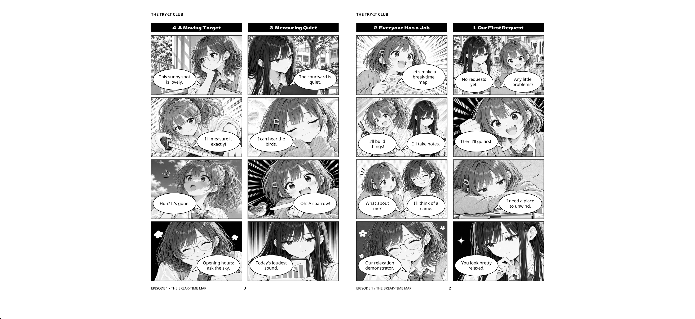
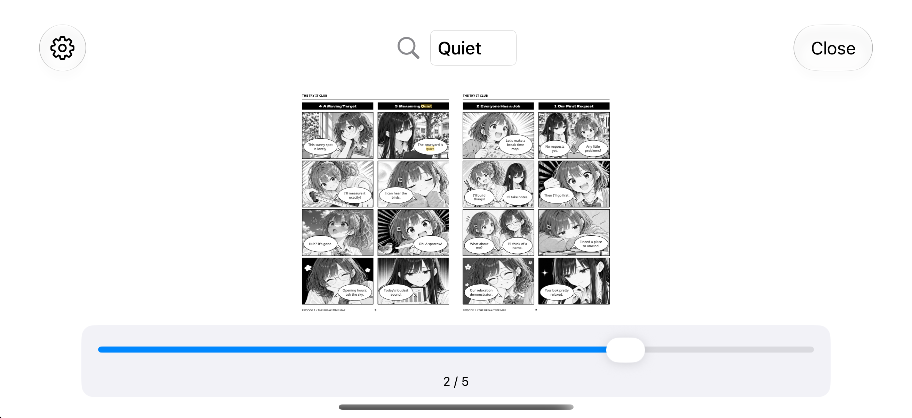
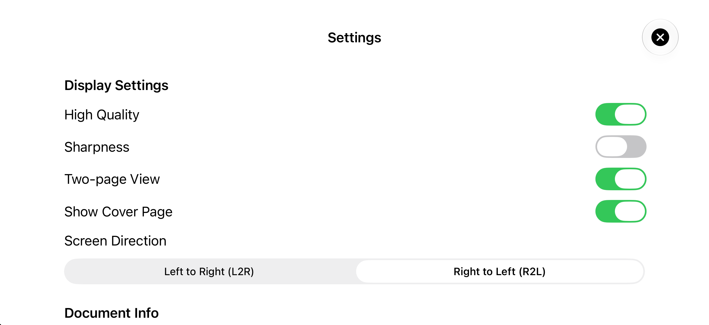
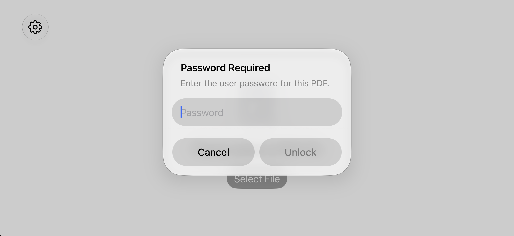

El problema
Los PDF de derecha a izquierda pueden mostrar páginas o el gesto de avance en el orden incorrecto.
Un visor para PDF de derecha a izquierda y libros japoneses
MihirakiPDFViewer es un visor PDF sencillo diseñado para libros de derecha a izquierda y publicaciones japonesas. Lee los ajustes de diseño y dirección, y permite cambiar con fluidez entre vista de una página y de dos páginas.

Los visores PDF estándar no siempre muestran los libros de derecha a izquierda o los PDF de dos páginas como esperas. MihirakiPDFViewer lee los ajustes del documento y presenta las páginas en un flujo que coincide con la forma en que debe leerse el libro.
Los PDF de derecha a izquierda pueden mostrar páginas o el gesto de avance en el orden incorrecto.
La app detecta la dirección y el diseño, y organiza las dobles páginas de forma natural.
El zoom, la búsqueda, el renderizado de alta calidad y la nitidez ayudan con texto pequeño.
Controles esenciales de lectura PDF en una interfaz limpia y enfocada.
Cambia el movimiento de páginas entre L2R y R2L según la dirección del PDF y abre los documentos de derecha a izquierda en su primera página.
Lee con un diseño que se adapta al documento, con gestión de portada cuando haga falta.
Busca texto dentro del PDF y pellizca para ampliar el área que necesitas.
Abre PDF que requieren contraseña de usuario y sigue leyendo tras desbloquearlos.
En la sección Opciones de Ajustes puede ejecutar pruebas de información de la app, almacenamiento local y renderizado de PDF, o consultar registros de diagnóstico sobre cierres, lentitud y problemas de funcionamiento o visualización. Los resultados incluyen fecha y hora, nombre del dispositivo y versiones del sistema y de la app. Los registros no incluyen datos personales, contenido, nombres o rutas de archivos, búsquedas ni contraseñas, y se eliminan tras 24 horas. Nada se envía automáticamente; solo sale del dispositivo al usar Compartir de forma explícita.



Para cualquiera que quiera leer PDF de derecha a izquierda en iPhone o iPad.
Avanza por libros de derecha a izquierda de una forma más parecida al papel.
Mantén conectadas las páginas izquierda y derecha en vista de dos páginas.
Usa búsqueda y zoom para revisar la sección exacta que necesitas.
Prueba MihirakiPDFViewer con estos PDF de muestra. En la app, elige Explorar PDF de muestra para filtrar el catálogo por idioma, descargar y abrir un PDF, o eliminar su copia local. Las descargas mediante datos móviles requieren confirmación.
THE TRY-IT CLUB EPISODE 1 THE BREAK-TIME MAP (English)
THE TRY-IT CLUB EPISODE 2 ROOM TO GROW (English)
© 2026 Komairo Hiyori
Las partes de esta obra sobre las que la persona que la publica posee derechos de autor u otros derechos susceptibles de licencia se ofrecen bajo la licencia Creative Commons Atribución 4.0 Internacional (CC BY 4.0).
https://creativecommons.org/licenses/by/4.0/
Al reutilizar esta obra, indica el título, el nombre de la persona autora, «Komairo Hiyori», la fuente de publicación de la obra original y un enlace a la licencia. Indica también si has realizado cambios.
Se ha utilizado inteligencia artificial generativa para crear y traducir los textos y las imágenes de esta obra. Los materiales cuyos derechos pertenecen a terceros, como las fuentes tipográficas, están sujetos a sus respectivas licencias. Este aviso no restringe el uso de las partes que no estén protegidas por derechos de autor ni por otros derechos.
Después del lanzamiento en App Store, reemplaza este botón por la URL de App Store.